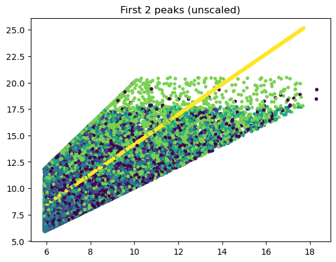
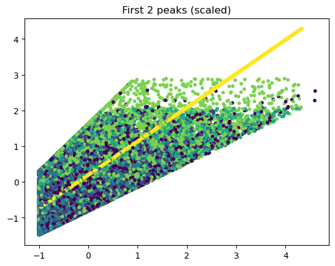
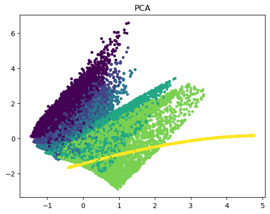
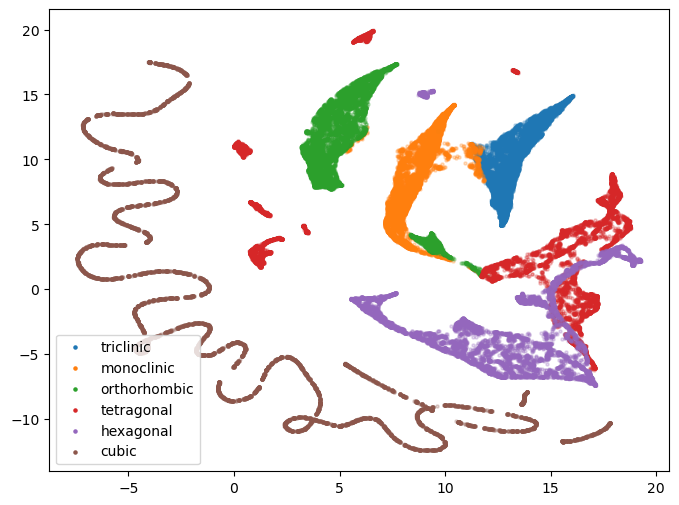
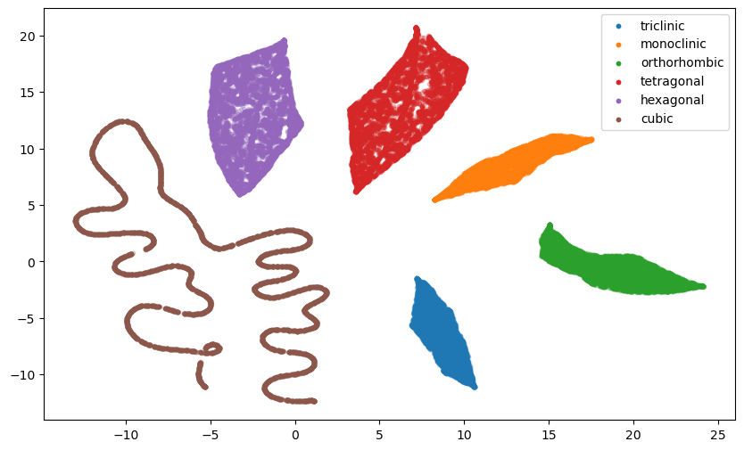
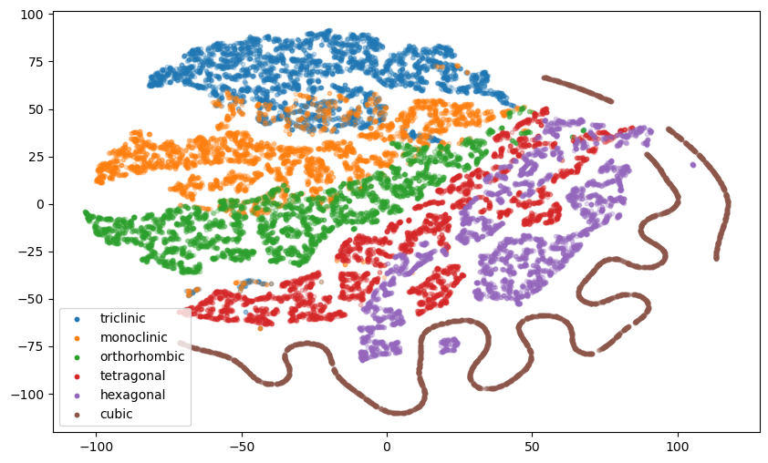
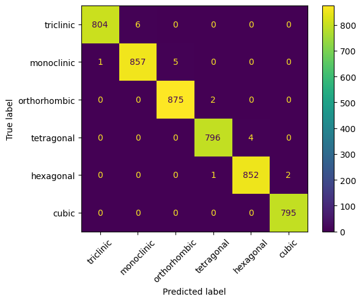
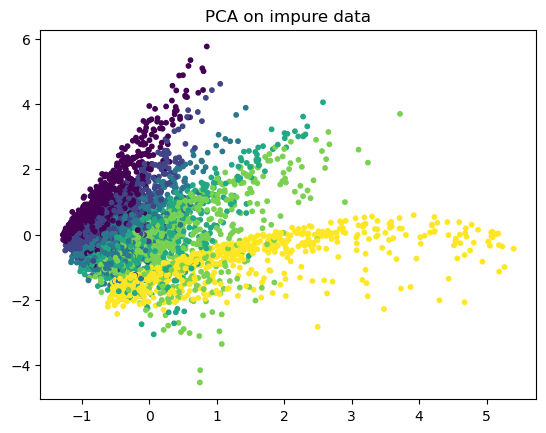
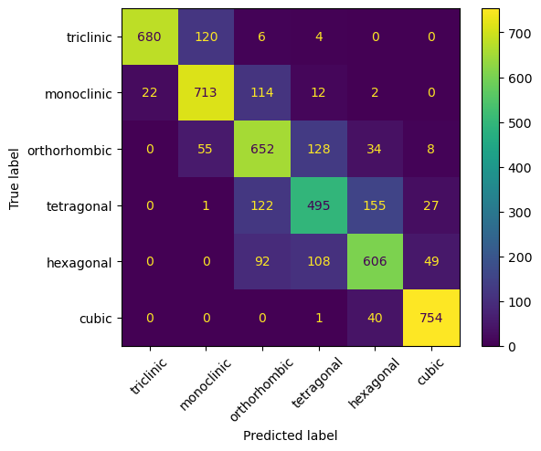

import numpy as np
import matplotlib.pyplot as plt
import pymatgen as pmgIntroduction
In this post, we’re going to take a look at visualising PXRD patterns in a somewhat unusual way. We are going to generate a whole load of random unit cells, and from these, calculate the peak positions we would expect to see in \(Cu_{K\alpha_1}\) PXRD data. We will treat these peak positions as coordinates in a high-dimensional space, and we will then apply various dimensionality reduction techniques to the peak position vectors and visualise the results.
This exercise provides some interesting results, particularly when we think about how PXRD data can be classified into the correct crystal system, extinction class or space group by neural networks (the linked articles generally set out to tackle more than one of these classification tasks).
In part 2 of this work, we will apply the same kind of techniques to full diffraction histograms.
Some of the methods we’ll be using, such as Principal Component Analysis (PCA) and Multi-dimensional Scaling (MDS) have previously been used in the crystallographic context in the program PolySNAP (and its successors). See the chapter by Gilmore, Barr and Dong in International Tables volume H for more information.
def get_unit_cell_dimensions(n_cells, minlength=5, maxlength=15, minangle=80,
maxangle=120, crystalsystem="triclinic"):
lengths = np.random.uniform(minlength,maxlength,(n_cells,3))
angles = np.random.uniform(minangle, maxangle, (n_cells,3))
angles_radians = np.radians(angles)
if crystalsystem.lower() != "triclinic":
if crystalsystem.lower() == "monoclinic":
angles_radians[:,0] = np.pi/2
angles_radians[:,2] = np.pi/2
elif crystalsystem.lower() == "hexagonal":
angles_radians[:,0] = np.pi/2
angles_radians[:,1] = np.pi/2
angles_radians[:,2] = 2*np.pi/3
lengths[:,1] = lengths[:,0].copy()
else: # Orthorhombic, tetragonal, cubic
angles_radians[:,0] = np.pi/2
angles_radians[:,1] = np.pi/2
angles_radians[:,2] = np.pi/2
if crystalsystem.lower() == "tetragonal":
lengths[:,1] = lengths[:,0].copy()
elif crystalsystem.lower() == "cubic":
lengths[:,1] = lengths[:,0].copy()
lengths[:,2] = lengths[:,0].copy()
cells = np.hstack([lengths, angles_radians])
return cellsdef get_lattice_matrix(unit_cell_dimensions):
a, b, c = unit_cell_dimensions[:,:3].T
cosal, cosbe, cosga = np.cos(unit_cell_dimensions[:,3:]).T
sinal, sinbe, singa = np.sin(unit_cell_dimensions[:,3:]).T
# Sometimes rounding errors result in values slightly > 1.
val = np.clip((cosal * cosbe - cosga) / (sinal * sinbe), a_min=-1, a_max=1)
gamma_star = np.arccos(val)
zeros = np.zeros_like(c)
v_a = np.stack([a * sinbe, zeros, a*cosbe]).T
v_b = np.stack([-b * sinal * np.cos(gamma_star), b*sinal * np.sin(gamma_star), b*cosal]).T
v_c = np.stack([zeros, zeros, c]).T
#matrix = np.swapaxes(np.stack([v_a,v_b,v_c], axis=2),1,2)
matrix = np.stack([v_a,v_b,v_c], axis=2)
"""insideroot = 1.0-cosal**2-cosbe**2-cosga**2+2*cosal*cosbe*cosga
# If this term is less than one, we have an invalid cell, so get rid of them
matrix = matrix[insideroot > 0]
insideroot = insideroot[insideroot > 0]
volume = a*b*c*np.sqrt(insideroot)
if insideroot.shape[0] != unit_cell_dimensions.shape[0]:
print(f"{unit_cell_dimensions.shape[0]-insideroot.shape[0]} invalid cells removed")"""
volume = np.abs(np.linalg.det(matrix))
return matrix, volume
def get_recip_lattice_matrix(matrix):
return np.linalg.inv(matrix)
def get_recip_lattice_metric_tensor(recip_lattice_matrix):
return recip_lattice_matrix @ np.swapaxes(recip_lattice_matrix,1,2)
def get_d_spacing(inv_metric_tensor,hkl,lam):
one_over_d_squared = np.einsum("ij,bji->bi",hkl,np.einsum("bij,kj->bik",inv_metric_tensor,hkl))
# Errors sometimes arise which lead to negative values being found here. This results from invalid cells
# and so these results should be removed.
valid = (one_over_d_squared <= 0).sum(axis=1) == 0
print(f"{100.*valid.sum()/valid.shape[0]} % valid cells")
d = 1/np.sqrt(one_over_d_squared[valid])
# Any d-spacings that are not accessible with the wavelength used should be removed
# Set their value such that lam/2d = 1 and hence the inverse sin will put their two-theta to 180
# And so they won't be included in the peaks
too_small = 2*d < lam
d[too_small] = lam/2
return d, valid, too_small
def d_to_tt(d,lam,too_small):
tt = (180/np.pi)*2*np.arcsin(lam/(2*d))
tt[too_small] = -1
return tt
def tt_to_d(tt,lam):
return lam/(2*np.sin(tt/2))h,k,l = np.meshgrid(np.arange(-10,11),np.arange(-10,11),np.arange(-10,11))
hkl = np.vstack([h.ravel(), k.ravel(), l.ravel()]).T
# Remove [0,0,0] reflection
hkl = hkl[np.abs(hkl).sum(axis=1)>0]
print(hkl.shape)(9260, 3)all_systems = []
crystal_system = []
cells = []
volumes = []
systems = ["triclinic","monoclinic","orthorhombic", "tetragonal", "hexagonal", "cubic"]
#systems = ["orthorhombic", "tetragonal", "hexagonal", "cubic"]
nsamples = 10000
for i, cs in enumerate(systems):
unit_cell_dimensions = get_unit_cell_dimensions(nsamples,crystalsystem=cs, maxlength=15)
lattice_matrix, volume = get_lattice_matrix(unit_cell_dimensions)
recip_lattice_matrix = get_recip_lattice_matrix(lattice_matrix)
recip_lattice_metric_tensor = get_recip_lattice_metric_tensor(recip_lattice_matrix)
lam = 1.54056
d, valid, too_small = get_d_spacing(recip_lattice_metric_tensor,hkl,lam)
tt = d_to_tt(d, lam, too_small)
cells.append(unit_cell_dimensions[valid])
volumes.append(volume[valid])
all_systems.append(tt)
crystal_system.append(i*np.ones(valid.sum()))
all_systems = np.vstack(all_systems)
crystal_system = np.hstack(crystal_system)100.0 % valid cells
100.0 % valid cells
100.0 % valid cells
100.0 % valid cells
100.0 % valid cells
100.0 % valid cellsfirst_thirty = []
for t in all_systems:
t = np.unique(np.around(t[t>0],6))
if t[:20].max() < 180:
first_thirty.append(t[:20])
first_thirty = np.array(first_thirty)
print(first_thirty.shape)(60000, 20)from sklearn.decomposition import PCA
from sklearn.preprocessing import StandardScaler
from sklearn.model_selection import train_test_split
random_state = 42
X_train, X_test, y_train, y_test = train_test_split(first_thirty, crystal_system, random_state=random_state, shuffle=True, test_size=10000)
cells = np.vstack(cells)
volumes = np.hstack(volumes)
cells_train, cells_test, volumes_train, volumes_test = train_test_split(cells, volumes, test_size=y_test.shape[0], random_state=random_state)scaler = StandardScaler()
pca = PCA(whiten=True)
scaled = scaler.fit_transform(X_train)
pca_transformed = pca.fit_transform(scaled)print(100*pca.explained_variance_ratio_[:6])
print(100*pca.explained_variance_ratio_[:6].sum())[96.46106456 1.78775745 0.89243086 0.32297124 0.14053371 0.11970709]
99.72446489921656plt.scatter(X_train[:,0], X_train[:,1], s=10, c=y_train)
plt.title("First 2 peaks (unscaled)")
plt.show()
plt.scatter(scaled[:,0], scaled[:,1], s=10, c=y_train)
plt.title("First 2 peaks (scaled)")
plt.show()
plt.scatter(pca_transformed[:,0],pca_transformed[:,1], s=10, c=y_train)
plt.title("PCA")
plt.show()


from umap import UMAP
u = UMAP(n_neighbors=50, metric="manhattan", min_dist=0.)
umap_transformed = u.fit_transform(scaled)plt.figure(figsize=(8,6))
for i, cs in enumerate(systems):
plt.scatter(umap_transformed[:,0][y_train == i],umap_transformed[:,1][y_train == i],s=5,alpha=0.25)
leg = plt.legend(systems)
for lh in leg.legend_handles:
lh.set_alpha(1)
plt.show()
u_with_labels = UMAP(n_neighbors=50)
umap_transformed_with_labels = u_with_labels.fit_transform(scaled, y_train)plt.figure(figsize=(10,6))
for i, cs in enumerate(systems):
plt.scatter(umap_transformed_with_labels[:,0][y_train == i],umap_transformed_with_labels[:,1][y_train == i],s=10,alpha=0.25)
leg = plt.legend(systems)
for lh in leg.legend_handles:
lh.set_alpha(1)
plt.show()
from openTSNE import TSNE
t_SNE = TSNE(n_components=2, n_jobs=16)
tsne_transformed = t_SNE.fit(scaled)KeyboardInterrupt: Exception ignored in: 'openTSNE._matrix_mul.matrix_mul.matrix_multiply_fft_2d'
Traceback (most recent call last):
File "<__array_function__ internals>", line 200, in rfft2
File "c:\Users\Mark\.conda\envs\testgallop\lib\site-packages\numpy\fft\_pocketfft.py", line 1257, in rfft2
return rfftn(a, s, axes, norm)
File "<__array_function__ internals>", line 200, in rfftn
File "c:\Users\Mark\.conda\envs\testgallop\lib\site-packages\numpy\fft\_pocketfft.py", line 1202, in rfftn
a = rfft(a, s[-1], axes[-1], norm)
File "<__array_function__ internals>", line 200, in rfft
File "c:\Users\Mark\.conda\envs\testgallop\lib\site-packages\numpy\fft\_pocketfft.py", line 409, in rfft
output = _raw_fft(a, n, axis, True, True, inv_norm)
File "c:\Users\Mark\.conda\envs\testgallop\lib\site-packages\numpy\fft\_pocketfft.py", line 70, in _raw_fft
r = pfi.execute(a, is_real, is_forward, fct)
KeyboardInterrupt: plt.figure(figsize=(10,6))
for i, cs in enumerate(systems):
plt.scatter(tsne_transformed[:,0][y_train == i],tsne_transformed[:,1][y_train == i],s=10,alpha=0.25)
leg = plt.legend(systems)
for lh in leg.legend_handles:
lh.set_alpha(1)
plt.show()
t_SNE3d = TSNE(n_components=3, n_jobs=16,negative_gradient_method="bh")
tsne3d_transformed = t_SNE3d.fit(scaled)u3d = UMAP(n_components=3)
u3d_with_labels = UMAP(n_components=3, n_neighbors=50, metric="manhattan", min_dist=0.0)
umap3d_transformed = u3d.fit_transform(scaled)
umap3d_transformed_with_labels = u3d_with_labels.fit_transform(scaled, y_train)import pandas as pd
import plotly.express as pximport pandas as pd
import plotly.express as px
df = pd.DataFrame()
data = umap3d_transformed
df["x"] = data[:,0]
df["y"] = data[:,1]
df["z"] = data[:,2]
df["a"] = np.around(cells_train[:,0], 2)
df["b"] = np.around(cells_train[:,1], 2)
df["c"] = np.around(cells_train[:,2], 2)
df["al"] = np.around(np.degrees(cells_train[:,3]), 2)
df["be"] = np.around(np.degrees(cells_train[:,4]), 2)
df["ga"] = np.around(np.degrees(cells_train[:,5]), 2)
df["volume"] = np.around(volumes_train,2)
df["cs"] = y_train
csdict = {}
for i,x in enumerate(systems):
csdict[i] = x
df["crystal_system"] = df["cs"].map(csdict)fig = px.scatter_3d(df, x="x", y="y", z="z", color="crystal_system",size="volume",size_max=20,opacity=1,hover_data=["a","b","c","al","be","ga","volume","crystal_system"])
fig.update_layout(margin=dict(l=0, r=0, b=0, t=0))
fig.show()Unable to display output for mime type(s): application/vnd.plotly.v1+jsonfrom sklearn.ensemble import RandomForestClassifier
from sklearn.metrics import confusion_matrix, classification_report, ConfusionMatrixDisplay
clf = RandomForestClassifier(n_estimators=100)
clf.fit(X_train, y_train)
predicted = clf.predict(X_test)cm = confusion_matrix(y_test, predicted)
disp = ConfusionMatrixDisplay(confusion_matrix=cm, display_labels=systems)
disp.plot()
plt.xticks(rotation=45)
plt.show()
cr = classification_report(y_test, predicted)
print(cr) precision recall f1-score support
0.0 1.00 0.99 1.00 810
1.0 0.99 0.99 0.99 863
2.0 0.99 1.00 1.00 877
3.0 1.00 0.99 1.00 800
4.0 1.00 1.00 1.00 855
5.0 1.00 1.00 1.00 795
accuracy 1.00 5000
macro avg 1.00 1.00 1.00 5000
weighted avg 1.00 1.00 1.00 5000
n_imp = 2
impure_patterns = []
for pattern in X_test:
imp_peaks = np.random.uniform(pattern.min(), pattern.max(), 2)
new_pattern = np.sort(pattern.tolist()+imp_peaks.tolist())
impure_patterns.append(new_pattern[:30])
impure_patterns = np.array(impure_patterns)tsne3d_transformed_impure = tsne3d_transformed.transform(scaler.transform(impure_patterns))pca_transformed_impure = pca.transform(scaler.transform(impure_patterns))
umap3d_transformed_impure = u3d.transform(scaler.transform(impure_patterns))plt.scatter(pca_transformed_impure[:,0],pca_transformed_impure[:,1], s=10, c=y_test)
plt.title("PCA on impure data")
plt.show()
df_imp = pd.DataFrame()
data_impure = umap3d_transformed_impure
df_imp["x"] = data_impure[:,0]
df_imp["y"] = data_impure[:,1]
df_imp["z"] = data_impure[:,2]
df_imp["a"] = np.around(cells_test[:,0], 2)
df_imp["b"] = np.around(cells_test[:,1], 2)
df_imp["c"] = np.around(cells_test[:,2], 2)
df_imp["al"] = np.around(np.degrees(cells_test[:,3]), 2)
df_imp["be"] = np.around(np.degrees(cells_test[:,4]), 2)
df_imp["ga"] = np.around(np.degrees(cells_test[:,5]), 2)
df_imp["volume"] = np.around(volumes_test,2)
df_imp["cs"] = y_test
csdict = {}
for i,x in enumerate(systems):
csdict[i] = x
df_imp["crystal_system"] = df_imp["cs"].map(csdict)df["impure"] = np.zeros(df.shape[0])
df_imp["impure"] = np.ones(df_imp.shape[0])both = pd.concat([df, df_imp])
both["impure"] = both["impure"].map({0:"pure",1:"impure"})
both.describe()| x | y | z | a | b | c | al | be | ga | volume | cs | |
|---|---|---|---|---|---|---|---|---|---|---|---|
| count | 30000.000000 | 30000.000000 | 30000.000000 | 30000.000000 | 30000.000000 | 30000.000000 | 30000.000000 | 30000.000000 | 30000.000000 | 30000.000000 | 30000.000000 |
| mean | 1.367028 | 5.039832 | 4.860281 | 12.524706 | 12.509490 | 12.449264 | 91.679328 | 93.347108 | 96.636279 | 2041.791418 | 2.500000 |
| std | 4.420446 | 3.826195 | 5.524264 | 4.311997 | 4.307781 | 4.328477 | 5.994581 | 8.197659 | 12.012234 | 1543.642428 | 1.707854 |
| min | -5.423842 | -2.962592 | -5.349432 | 5.000000 | 5.000000 | 5.000000 | 80.000000 | 80.010000 | 80.000000 | 79.070000 | 0.000000 |
| 25% | -2.237483 | 1.780744 | 0.271064 | 8.810000 | 8.817500 | 8.660000 | 90.000000 | 90.000000 | 90.000000 | 878.485000 | 1.000000 |
| 50% | 1.405605 | 5.163531 | 4.262781 | 12.550000 | 12.510000 | 12.430000 | 90.000000 | 90.000000 | 90.000000 | 1614.475000 | 2.500000 |
| 75% | 3.341424 | 7.185151 | 9.769769 | 16.240000 | 16.210000 | 16.180000 | 90.000000 | 90.000000 | 99.692500 | 2783.850000 | 4.000000 |
| max | 13.603477 | 14.783800 | 18.217787 | 20.000000 | 20.000000 | 20.000000 | 120.000000 | 120.000000 | 120.000000 | 7998.140000 | 5.000000 |
fig = px.scatter_3d(both, x="x", y="y", z="z", color="crystal_system",symbol="impure",size="volume",size_max=20,opacity=1,hover_data=["a","b","c","al","be","ga","volume","crystal_system"])
fig.update_layout(margin=dict(l=0, r=0, b=0, t=0))
fig.show()Unable to display output for mime type(s): application/vnd.plotly.v1+jsonimpure_pred = clf.predict(impure_patterns)cm = confusion_matrix(y_test, impure_pred)
disp = ConfusionMatrixDisplay(confusion_matrix=cm, display_labels=systems)
disp.plot()
plt.xticks(rotation=45)
plt.show()